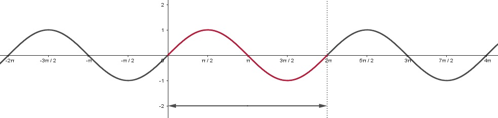
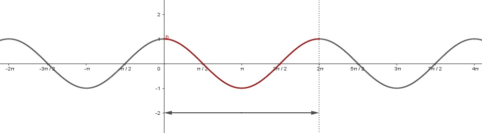

En este apartado se analizarán las funciones trigonométricas seno y coseno así como sus gráficas, con el fin de familiarizar a la persona estudiante con las características que poseen este tipo de funciones.
Gráfica de seno y coseno
Las funciones seno y coseno son funciones que tienen como característica el tener periodo $2\pi$.
$\text{sen}(x+2\pi)$ $\cos(x+2\pi)$
La gráfica de una función periódica repite su ciclo en cada intervalo de longitud igual a su periodo. En la figura 1 se muestra el ciclo de la función seno, se resalta en este caso el intervalo $[0,2\pi]$ .

Figura 1
En la figura 2 es se puede observar que en el caso de la función coseno, nuevamente el periodo es $2\pi$ . Observe que por ejemplo en el intervalo $[2\pi,4\pi]$ se repite el ciclo.
Figura 2
Note que las funciones seno y coseno son funciones definidas en $\mathbb{R}$ y tienen por rango $[-1,1]$ . Es decir:
$-1\leq\text{sen}(x)\leq 1$ $-1\leq\cos(x)\leq 1$
Otro dato de las funciones seno y coseno que resultan útil en el estudio del cálculo son las coordenadas de intersección o ceros de la función de las gráficas. En la figura 1 puede observarse que en el caso de función seno las intersecciones se dan en $\text{sen}(0)$, $\text{sen}(\pm \pi)$ , $\text{sen}(\pm 2\pi)$ , …; es decir múltiplos enteros de $\pi$. En el caso de la función coseno las intersecciones se encuentran en los múltiplos impares de $\dfrac{\pi}{2}$ como por ejemplo $\pm\dfrac{\pi}{2}$,$\pm\dfrac{3\pi}{2}$ ,$\pm\dfrac{5\pi}{2}$ , …. Entonces, los ceros de las funciones seno y coseno pueden escribirse en general de siguiente forma:
$\text{sen}(x)=0$ para $x=n\pi$, $n$ entero.
$\cos(x)=0$ para $x=(2n+1)\dfrac{\pi}{2}$, $n$ entero.